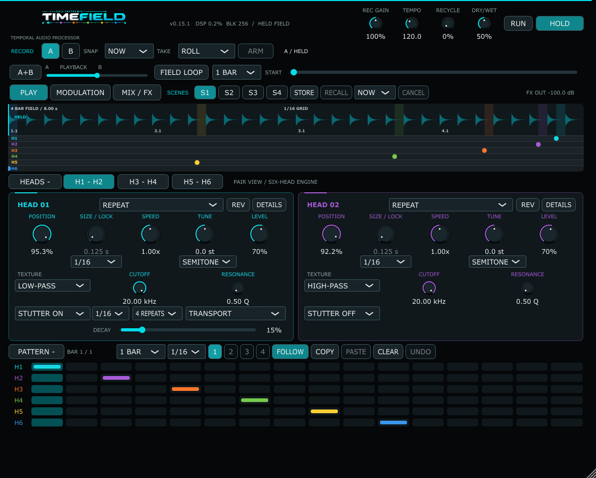

Private beta
TimeField
0.15.1 · Windows x64 VST3
Record a four-bar field and reshape it with six playback heads, a field loop and effects.

Try it out
Explore PLAY for recording and sequencing, MODULATION for two LFOs per head, and MIX / FX for balancing the sound and adding effects.
Getting started
Extract the ZIP and follow the included README. Copy the complete TimeField.vst3 folder into your Windows VST3 folder, then rescan plugins in your music program. Load it as an effect on a track receiving audio.
More screenshots


Tell me how it went.
Send the build name, your Windows version and what happened. Screenshots, recordings and things you made are welcome.
Send beta feedback ↗